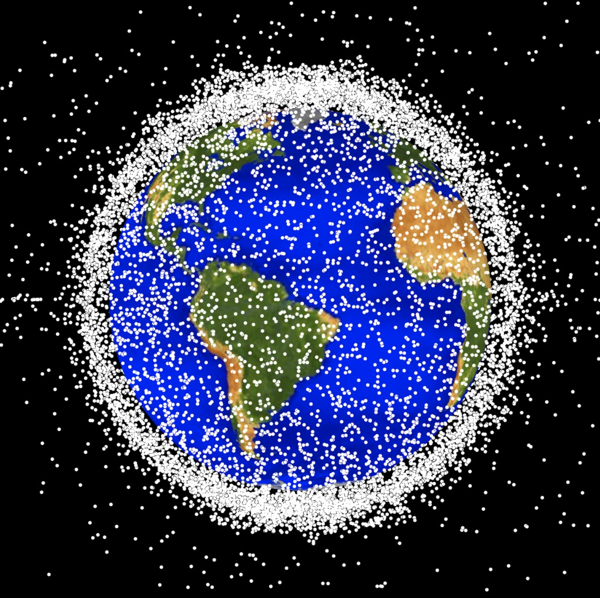

Space debris remediation through de-orbit of dead satellites
The first successful demonstration of technology for orbital debris remediation was completed in August 2021 by the Japanese company Astroscale. The proliferation of low-earth orbit (LEO) mega constellations for satellite telecommunications and Earth observation data is incentivizing commercial space companies to keep their neighborhoods clean on their own dime. For example, OneWeb has added a small magnetic plate to their LEO communications satellite for ease of capture, and has entered into an agreement with Astroscale, who is targeting 2024 to begin commercial debris removal operations.
LEO stands for low Earth orbit and is the region of space within 2,000 km of the Earth's surface. It is the most concentrated area for orbital debris. Credit: NASA ODPO
There’s more to space stewardship than the removal of existing defunct satellites and spent rocket second stages. There are technologies for mitigation (such as the magnetic plate used by OneWeb), collision avoidance (high impulse propulsion), and collection of space situational-awareness data to track and characterize the debris. Detailed space debris data enables the New Space economy to navigate safely and avoid conjunctions that could lead to a catastrophic Kessler event (a chain reaction of space debris which knocks into other assets and begets more debris and so on until certain orbits are uninhabitable).
You can read more about orbital debris and the enablers of space stewardship for the New Space economy here: Why Orbital Debris Deserves Our Attention. Or, for a lively discussion on the topic with experts from academia and industry, watch the Orbital Debris webinar, summarized and linked here: Prime Movers Lab Webinar Recap: Orbital Debris.